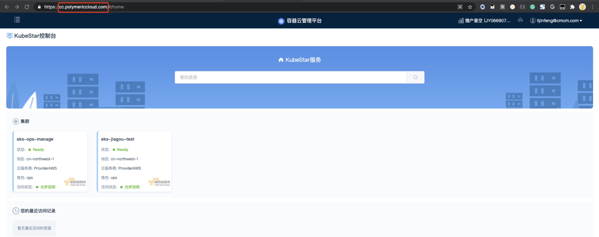
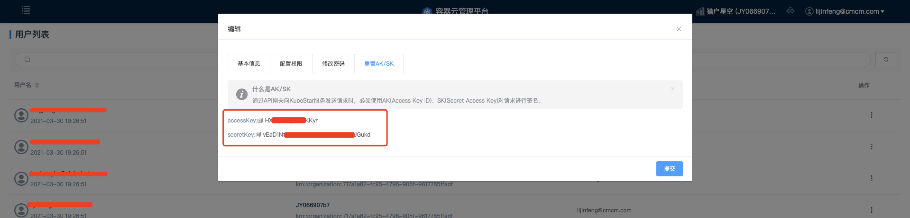
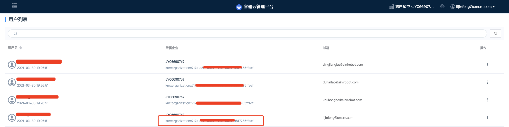
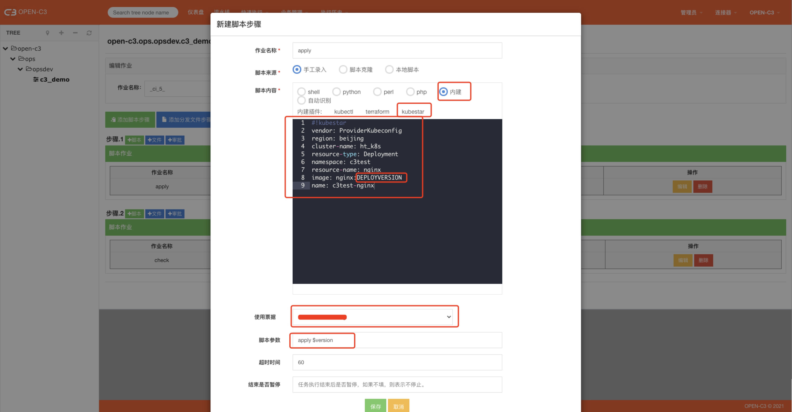
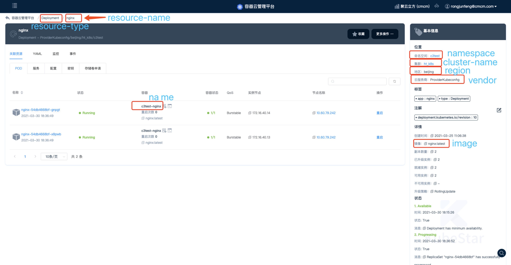

1. 简介
OPEN-C3可以用作容器发布，如果服务是托管在kubestar中，可以使用本文描述的方式进行发布。
2. 管理票据
在“个人票据”中管理自己的票据。票据类型选择作业内建插件。

票据内容示例如下：
kubestar-addr: cc.polymericcloud.com
access-key: kdAFXKXAjIJ16HZc
secret-key: 0Y2rBiVSGm3eLQMXgZeO0qcn3gNKrYOA
org: "krn::organization::e34f2cf4-6c15-4de9-9286-d018c3f8c612"
票据内容来源：
2.1. kubestar-addr
kubestar控制台的web地址。

2.2. access-key 和 secret-key
进到kubestar用户列表页面，“编辑个人信息”中可以看到AK/SK。

2.3. org
在kubestar用户列表中可以看到org信息。

3. 配置作业流程
在流水线、作业、快速脚本中的用法都一致，如下。
3.1. apply (应用)
发布应用，是一次发布的操作。

使用内建插件，点击选择kubestar类型。
脚本内容：
#!kubestar
vendor: ProviderKubeconfig
region: beijing
cluster-name: ht_k8s
resource-type: Deployment
namespace: c3test
resource-name: nginx
image: nginx:DEPLOYVERSION
name: c3test-nginx
image中用到了关键字DEPLOYVERSION, 系统调用过程中会用脚本参数中的第二个参数替换DEPLOYVERSION。
脚本中的字段来kubestar控制台的应用详情页面：

票据： 选择上第一步创建的票据
脚本参数： apply $version
在做CI/CD过程中$version就是代码仓库中打的tag。
3.2. check （检查发布状态）
配置和apply基本一样，在脚本参数部分把 apply 改成 check。
系统会在超时时间内每10秒检查一下服务的状态，直到对应的服务当前检查的版本是Running状态后退出。
4. 注
kubestarclt需要的参数是脚本和票据内容的总和，系统实现过程中使用了覆盖的方式。
脚本中的内容会覆盖票据中的内容。
如票据中定义了org，如果脚本中也定义了org，那么以脚本中为主。
只要保证脚本中和票据中的参数加起来没有遗漏，系统就可以获取到全的参数进行正确调用。
5. 维护注意
需要手动维护openc3容器或者集群中有terraform命令 （待优化成自动）
wget https://github.com/open-c3/open-c3-install-cache/job-buildin/kubestarctl -O /bin/kubestarctl
chmod +x /bin/kubestarctl